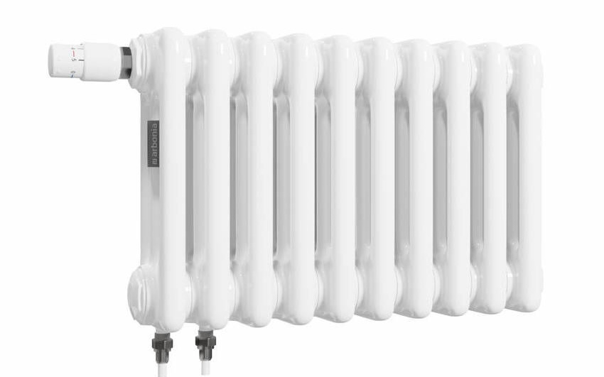
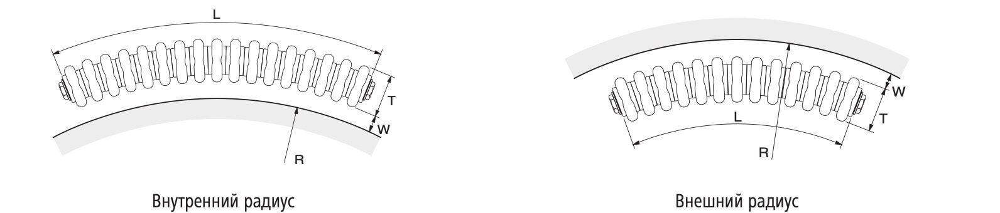

Трубчатые радиаторы Arbonia
О компании Arbonia
Более шестидесяти лет назад, когда была заложена основа компании Arbonia, перед ее создателями стояла основополагающая задача – предоставление клиентам отопительных решений. На сегодняшний день наши амбиции значительно расширились. Arbonia выросла в производителя отопительного оборудования, отвечающего высочайшим стандартам как в жилищном, так и в промышленном строительстве. Методы достижения успеха в нашей деятельности не изменились с момента основания: мы сосредоточены на обслуживании потребностей клиентов и на предложении им эффективных решений. Это подразумевает тщательное обсуждение условий поставки и сроков выполнения заказов с каждым заказчиком. Arbonia выдвигает строгие критерии к качеству упаковки продукции. Долговечность и высокое качество поверхностной обработки наших товаров давно убеждают клиентов в соответствии продукции Arbonia современным высоким стандартам. Мы предоставляем нашим клиентам свободу выбора дизайна и цветов, что является неотъемлемым принципом нашей работы. Наши дизайнерские достижения регулярно отмечаются наградами. Arbonia с энтузиазмом стремится к непрерывному улучшению своих результатов, подбирая для вас идеальный температурный режим.
Трубчатые радиаторы Arbonia
Выбирая трубчатые радиаторы Arbonia, вы делаете обдуманный выбор в пользу изделий, которые отличаются высочайшим качеством как с точки зрения техники, так и дизайна. Эти радиаторы предоставляют комфорт, отвечающий ожиданиям самого взыскательного застройщика, обеспечивая при этом добавленный уют благодаря идеальному распределению тепла за счет радиации и конвекции. В ассортименте представлены модели разных размеров, что увеличивает функциональность и безопасность за счет отсутствия острых углов и кромок, что особенно важно для помещений школ и детских комнат. Батареи подходят для установки в жилых и общественных зданиях, так как их легко очищать.
Большое разнообразие:
- Пять вариантов монтажной глубины от 65 до 225 мм, предусматривающие 2-6 трубчатые секции.
Двадцать один вариант высоты от 180 до 3000 мм.
- Длина радиатора определяется как количество секций, умноженное на 45 мм, при этом шаг длины составляет 45 мм, минимальная длина - 270 мм (6 секций), максимальная монтажная длина одного блока - от 450 до 2970 мм, в зависимости от глубины и высоты, с общей максимальной монтажной длиной до трех блоков.
- Предусмотрено двухтрубное соединение с боковыми подключениями и возможность установки полки или скамьи.
Для радиаторов с односторонними подключениями при определенных размерах предусмотрена дополнительная оплата за вставную трубку, обеспечивающую правильную циркуляцию воды.
Максимальная монтажная длина учитывает вес и необходимость транспортировки, ограничивая длину одного радиатора для удобства доставки. Если нужная длина превышает максимум, радиаторы поставляются несколькими блоками для соединения на месте.
Преимущества:
- Классический и всегда актуальный дизайн.
- Непревзойденный уровень качества и комфорта.
- Богатое разнообразие моделей.
- Удобство использования и эффективность.
- Высокая безопасность.
- Простота монтажа и надежность, соответствующая стандартам VDI 6036.

Условия гарантии
Компания ARBONIA GmbH предоставляет конечным потребителям в отношении всех поставленных ею радиаторов гарантию производителя на период десять (10) лет в описанном ниже объеме и в соответствии с указанными условиями гарантии:
Объем гарантии
Если в изделии, для которого предоставлена гарантия, в течение десяти лет будет обнаружен недостаток, то компания ARBONIA GmbH при наличии нижеописанных гарантийных условий бесплатно заменит (дополнительная поставка) или отремонтирует его (устранение недостатка), при этом право выбора действия сохраняется за ARBONIA GmbH.
Данная гарантия производителя не ограничивает права конечного заказчика в соответствии с законодательством и по договору в отношена непосредственного партнера по договору (например, продавца или установщика).
Гарантия также не ограничивает законные права конечного потребителя в отношении ARBONIA GmbH (например, в связи с ответственностью изготовителя продукции согласно § 823 ГК ФРГ или закону об ответственности производителя за качество произведенной продукции). Для удовлетворения этих претензий компания ARBONIA GmbH заключила договор о страховании гражданской ответственности предприятия и гражданской ответственности производителя товара с известной немецкой страховой компанией.
Начало гарантии
Действие гарантии начинается со дня поставки или передачи радиатора конечному потребителю, но не позднее чем через один год с даты производства радиатора, указанной на нем.
Мы предоставляем основополагающую десятилетнюю гарантию в отношении:
- ущерба в связи с производственными дефектами,
- герметичности со стороны водяного контура,
- функционирования или свойств изделия, а также
- наружных поверхностей с покрытием.
Описанный выше объем гарантии действует при соблюдении следующих условий, выполнение которых конечный потребитель должен подтвердить, чтобы воспользоваться гарантией:
- Монтаж изделия выполнен в стране, для которой было оформлено данное гарантийное свидетельство.
- Соблюдены инструкции по монтажу и прокладке труб при установке изделия, для которого предоставляется данная гарантия.
- Монтаж/установка выполнены квалифицированным специалистом по отопительным системам.
- Первый пуск генератора тепла произведен в соответствии с указаниями производителя. Протокол пуска в эксплуатацию должен быть предъявлен по требованию.
- Перед пуском в эксплуатацию необходимо выполнить промывку системы. Система не должна содержать в себе металлических загрязнений, остатков уплотняющих материалов, смазки и газов.
- Радиаторы подключены к закрытым водяным системам отопления с независимой схемой подключения с расширительным баком.
- Для монтажа разрешается использовать только оригинальные принадлежности ARBONIA GmbH. Это относится, в частности, к настенному/напольному креплению, заглушкам и вентиляционным пробкам.
- Соблюдены условия эксплуатации и требования к воде в системе отопления согласно VDI 2035.
- Учтены возможности и границы применения для радиаторов, покрытых лаком согласно DIM 55900.
- О повреждениях, полученных в результате транспортировки, необходимо сообщить поставщику не позднее следующего рабочего дня после даты поставки. Наступает ответственность ARBONIA GmbH за недостатки, обнаруженные в изделии (как результат злого умысла или халатности).
- Претензии по гарантии предъявлены только через непосредственного партнера конечного потребителя по договору (установщика, продавца и др.).
- Конечный потребитель сразу же продемонстрировал своему партнеру по договору недостаток, обнаруженный в изделии, (но не позднее чем через 1 (одну) неделю с момента его обнаружения).
- Конечный потребитель подтвердил дату поставки, предъявив оригинал счета или накладной с указанной датой поставки.
- Предъявлен гарантийный сертификат.
Гарантийные требования не могут быть предъявлены в случае
- удаления или намеренного изменения данных о дате производства; неправильного планирования или расчета параметров;
- неправильно выполненного монтажа'установки/пуска в эксплуатацию;
- установки в помещениях с повышенной влажностью, например, ванных комнатах без вентиляционной установки, прачечных, бассейнах или автомойках; Исключение: радиаторы с дуплексным покрытием.
- ненадлежащего обращения (механические повреждения, вандализм, изменения красочного и лакового покрытия вследствие влияния внешних факторов, например, накладывания сырой ткани, ультрафиолетового облучения и т. д.);
- неправильного использования (например, превышения максимально допустимых рабочих параметров, таких как рабочая температура или давление, использования агрессивных или абразивных чистящих средств);
- периодического или продолжительного обезвоживания системы;
- неправильного технического обслуживания;
- ненадлежащей транспортировки (например, в открытом кузове грузового автомобиля), неправильного хранения (например, под открытым небом) или манипуляций с изделием;
- попадания с водой инородных тел (например, стружки, известковых отложений); химических или электрохимических воздействий.
Гарантия не распространяется на
- претензии, связанные с естественным износом в процессе эксплуатации (сюда относится, например, износ подвижных деталей, клапанов, головок термостатов, уплотнений и т. д.);
- электрические и электронные детали;
- претензии об отсутствии компонентов изделия, поступившие после его установки;
- повреждения, возникшие вследствие форс-мажорных обстоятельств;
- коррозионные повреждения (особенно если были подключены узлы водоподготовки, декальцинирования и т. д. или добавлялись несоответствующие средства против замерзания);
- любой прямой или косвенный ущерб, который был причинен здоровью или материальным ценностям; ущерб, возникший из-за упущенной возможности использования изделия.
- расходы на транспортировку и пересылку запасных частей, монтаж или демонтаж изделия, а также на работы по пуску в эксплуатацию и регулировке;
- расходы на выяснение причин возникновения повреждений. экспертизы, заключения, и т. д.;
- возмещение ущерба вследствие остановки производства, снижение стоимости и прочие виды опосредованного косвенного ущерба.
Прочее:
- В случае признания ARBONIA GmbH наличия производственного брака или дефекта материала компания ARBONIA GmbH оставляет за собой право отремонтировать дефектные компоненты или заменить их исправными деталями.
- При наступлении гарантийного случая изделие может быть заменено на равноценное из другой серии/другого конструктивного рода. Расходы на возможные необходимые изменения на месте монтажа не компенсируются.
- Arbonia оставляет за собой право по своему усмотрению нанимать специализированные фирмы для проведения работ по санированию системы. Замененные изделия и'или запасные части переходят в собственность ARBONIA GmbH.
- В случае дополнительной поставки или устранения выявленных недостатков компания ARBONIA GmbH не предоставляет новую гарантию и не приостанавливает течение срока имеющейся гарантии (таким образом. 10 лет являются максимально допустимым сроком действия гарантии без какой-либо возможности продления).
- Действуют нормы немецкого права, если определенно исключается действие норм Конвенции ООН о договорах международной купли-продажи товаров.
Радиусное исполнение радиаторов Arbonia
